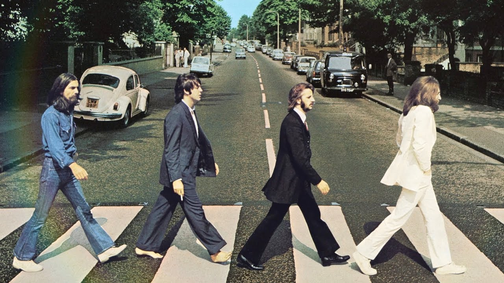
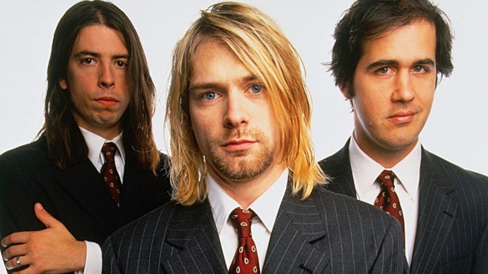

| 50-60 | 70-80 | 90-2000 | Subgêneros |
|---|
O rock and roll surgiu nos Estados Unidos na década de 1950, com raízes no blues, rhythm and blues e country music.
Nos anos 50 e 60, o rock passou por diversas mudanças e evoluções.

Nos anos 70 e 80, o rock se tornou mais diversificado e experimental.
Nos anos 90 e 2000, o rock continuou a se diversificar e novos subgêneros surgiram.

O rock continua a ser um gênero popular e influente na música.
Saiba mais sobre a história do rock na Wikipedia